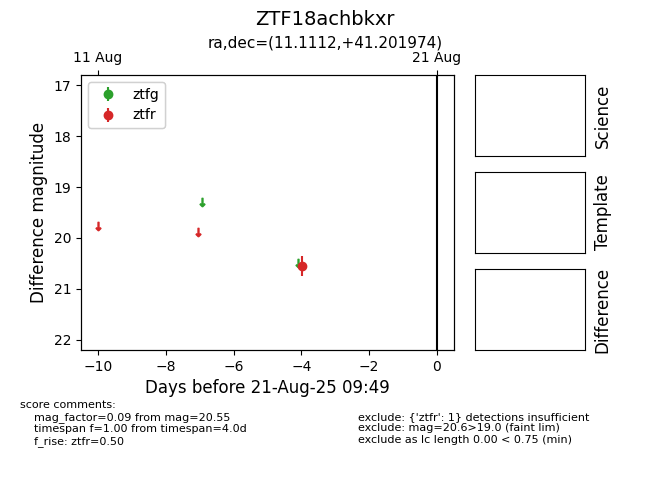

Target ZTF18achbkxr at 2025-08-21 09:49, see:
FINK: fink-portal.org/ZTF18achbkxr
Lasair: lasair-ztf.lsst.ac.uk/objects/ZTF18achbkxr
ALeRCE: alerce.online/object/ZTF18achbkxr
alt names
ZTF18achbkxr (ztf,alerce)
coordinates:
equatorial (ra, dec) = (11.1112,+41.20197)
galactic (l, b) = (121.5168,-21.65056)
photometry
last ztfr=20.55
1 ztfr detections
